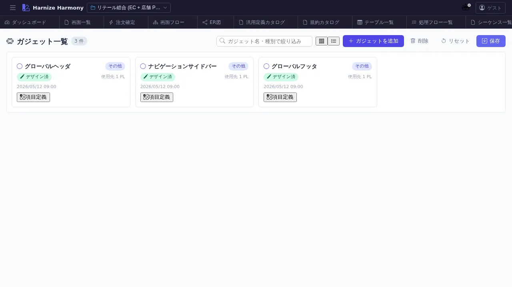

ガジェット一覧
対象画面:
GadgetListView(frontend/src/components/gadget/GadgetListView.tsx) ルート:/w/:wsId/gadget/list種別: シングルトンタブ
概要
ガジェット (Screen.purpose='gadget') を一覧する。PageLayout のヘッダ / サイドバー / ダッシュボードの中に配置される小さな再利用 UI 部品 (時計 / 通知ベル / ユーザーメニュー / プロモバナー 等) を、通常の Screen と分離して管理する画面。RFC #1021 / pl-4。
到達経路
- HeaderMenu → 「ガジェット」 → 「一覧」
- PageLayoutDesigner からの「ガジェット追加」ダイアログ経由
- 直接 URL:
/w/<wsId>/gadget/list
画面構成

主要エリア
- ヘッダー — タイトル「ガジェット一覧」 + 件数 + 「ガジェットを追加」
- 一覧 — ガジェット名 / 想定スロット (header / sidebar / footer / dashboard / inline) / 利用先 PageLayout 数 / 成熟度
主要操作
| 操作 | 手段 | 結果 |
|---|---|---|
| 新規作成 | 「ガジェットを追加」 | Screen を purpose='gadget' で生成、Designer 新タブ |
| デザイン編集 | カード / 行クリック | /screen/design/:id (Designer、ガジェット用 viewport) |
| 項目編集 | 行のアイコン | /screen/items/:id 新タブ |
| 削除 | 右クリック → 「削除」 / Delete | PageLayout 参照ありは警告 |
| rename | 右クリック → 「ID 変更…」 / F2 | RenameEntityDialog |
データ前提
- 空状態: 「ガジェットが未登録です」
- 意味のある状態: retail でヘッダ用ガジェット (header-clock / header-gadget-handler 等) が登録される
screen/listには出ない:Screen.purpose !== 'gadget'でフィルタされるため、本画面が canonical な置き場
関連仕様書
docs/spec/page-layout.md— gadget の責務 / PageLayout との関係docs/spec/list-common.md
関連 skill
- なし
既知の制約・注意
- ガジェットは Screen の 1 種だが、
purpose='gadget'でカテゴリ分離。通常の画面遷移 (route) 対象外 - gadget の編集には PageLayout 側との contract (slot プロパティ等) を意識すること